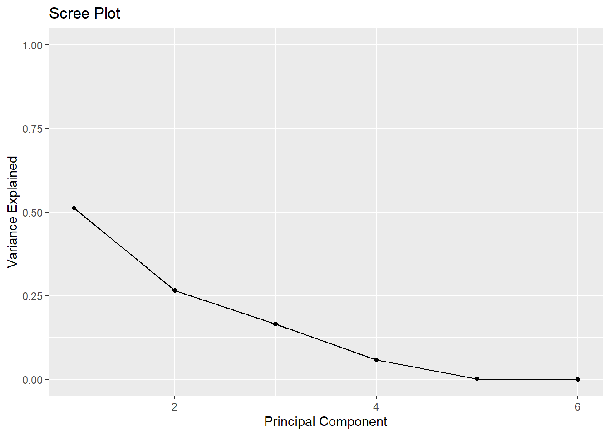
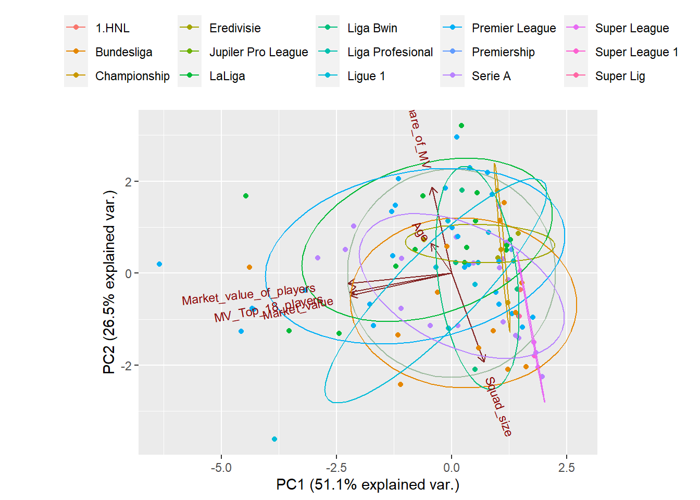

El análisis de componentes principales (PCA) en la programación R es un análisis de los componentes lineales de todos los atributos existentes. Los componentes principales son combinaciones lineales (transformación ortogonal) del predictor original en el conjunto de datos. Es una técnica útil para EDA (análisis exploratorio de datos) y permite visualizar mejor las variaciones presentes en un conjunto de datos con muchas variables.
Una de las aplicaciones del PCA es la reducción de dimensionalidad (variables), perdiendo la menor cantidad de información (varianza) posible: cuando tenemos un gran número de variables cuantitativas posiblemente correlacionadas (indicativas de la existencia de información redundante), el PCA nos permite reducirlos a un número menor de variables transformadas (componentes principales) que explican gran parte de la variabilidad de los datos. Cada dimensión o componente principal generado por PCA será una combinación lineal de las variables originales, y además serán independientes o no correlacionadas entre sí. Los componentes principales generados pueden, a su vez, utilizarse en métodos de aprendizaje supervisado, como la regresión de componentes principales o mínimos cuadrados parciales.
El PCA también sirve como herramienta para la visualización de datos: supóngase que quisiéramos representar \(n\) observaciones con medidas sobre \(p\) variables \((X=X1,X2,...,Xp)\) como parte de un análisis exploratorio de los datos. Lo que podríamos hacer es examinar representaciones bidimensionales, sin embargo, existen un total de \((p2)=p(p−1)/2\) posibles representaciones entre pares de variables, y si el número de variables es muy alto, estas representaciones se harían inviables, además de que posiblemente la información contenida en cada una sería solo una pequeña fracción de la información total contenida en los datos.
El PCA puede considerarse como una rotación de los ejes del sistema de coordenadas de las variables originales a nuevos ejes ortogonales, de manera que estos ejes coincidan con la dirección de máxima varianza de los datos.
NOTA:El PCA no requiere la suposición de normalidad multivariante de los datos.
Ejemplo Aplicativo
En esta presentación analizaremos un conjunto de datos relacionados con los 100 clubes de fútbol mejor valorados económicamente según la prestigiosa página Transfermarkt.com. A través de imágenes y gráficos intentaremos entender dónde, cómo y por qué en el mundo del fútbol están los 100 clubes que tienen las plantillas mejor valoradas.
Las variables a analizar serán las ligas en las que se ubican estos clubes, la edad promedio de su plantilla, el número de jugadores que componen cada equipo, el valor total de cada plantilla en el mercado actual y el porcentaje del valor total. de la plantilla que clasifican a sus 18 jugadores más caros.
Este es el enlace para acceder al conjunto de datos “Los 100 clubes de fútbol mejores valorados” https://www.kaggle.com/datasets/santiagovolpi/los-100-clubes-de-futbol-mejor-valuados-del-mundo.
Descripción
Los conjuntos de datos incluyen:
Club: nombre del club
Competición: competición a la que pertenece el club
Tamaño del equipo
Valor de mercado
Valor de mercado de los jugadores
MV mejores 18 jugadores
Proporción de VM
Conjunto de datos de los 100 mejores clubes
Para este análisis son 7 variables a estudiar, de las cuales 1 es cualitativa, mientras que las otras 6 son cuantitativas.
Cálculo de la varianza total explicada por cada componente principal
#calculate total variance explained by each principal componentvar_explained = pc2$sdev^2/sum(pc2$sdev^2)#create scree plotlibrary(ggplot2)qplot(c(1:6), var_explained) +geom_line() +xlab("Principal Component") +ylab("Variance Explained") +ggtitle("Scree Plot") +ylim(0, 1)

Se observa que el PC1 explica alrededor del 51,13% d ela variabilidad y PC2 explica alrededor del 26,47% de la variabilidad.
Otra forma de interpretar la trama es que PC1 está correlacionado positivamente con la variable Squad_size, y PC1 está correlacionado negativamente con Age, Market_value, Market_value_of_players, MV_Top_18_players, Share_of_MV.
PC2 está correlacionado con Age y Share_of_MV, pero está correlacionado negativamente con Squad_size, Market_value, Market_value_of_players, MV_Top_18_players.
library(ggplot2)library(usethis)library(devtools)install_github("vqv/ggbiplot")library(ggbiplot)g <-ggbiplot(pc2,obs.scale =1,var.scale =1,groups = valu$Competition,ellipse =TRUE,circle =TRUE,ellipse.prob =0.68)g <- g +scale_color_discrete(name ='')g <- g +theme(legend.direction ='horizontal',legend.position ='top')print(g)

Bi plot es una herramienta importante en PCA para comprender lo que sucede en el conjunto de datos.